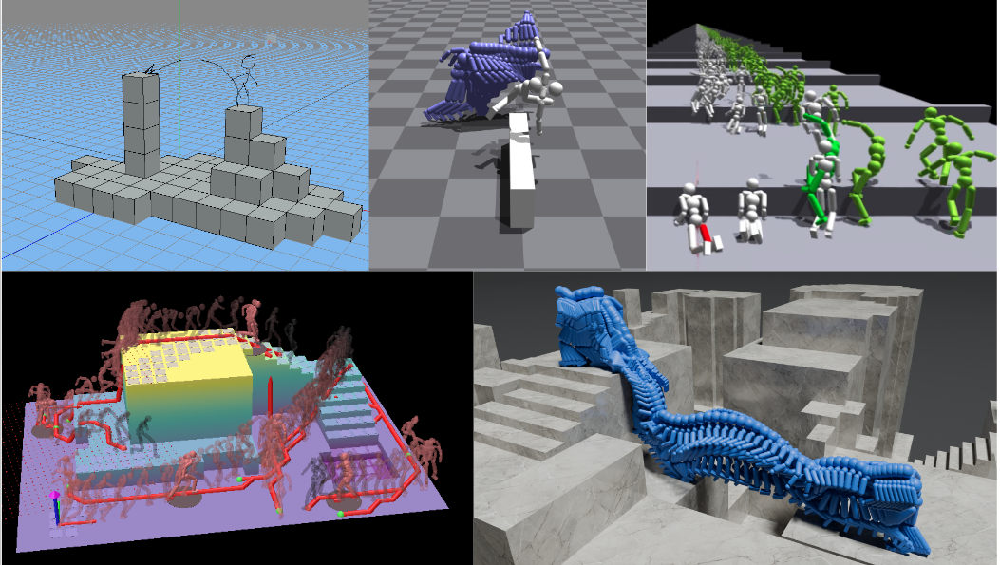
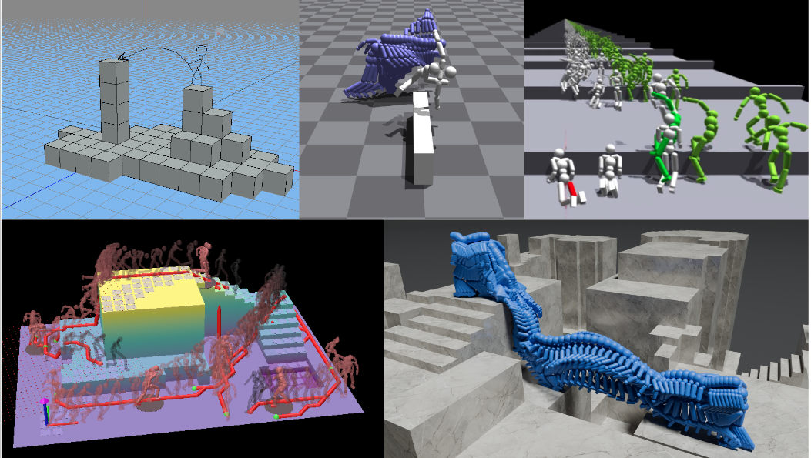

Pre-Deep-Learning Environment Aware Character Animation
May 10, 2025.

My first paper has been officially accepted! This paper was motivated by a vague goal in my mind: in a complex environment that is either procedurally generated or manually designed, can we control a physics-based character to go from point A to point B?
While focusing on this project, I did not give myself enough time to do a full literature review of previous terrain traversal character animation papers. The goal of this blog post is to take a look at some papers from the pre-deep-learning era of character animation research, in order to gain some insights that will be valuable for the future of terrain-traversal character animation.

My first paper has been officially accepted! This paper was motivated by a vague goal in my mind: in a complex environment that is either procedurally generated or manually designed, can we control a physics-based character to go from point A to point B?
While focusing on this project, I did not give myself enough time to do a full literature review of previous terrain traversal character animation papers. The goal of this blog post is to take a look at some papers from the pre-deep-learning era of character animation research, in order to gain some insights that will be valuable for the future of terrain-traversal character animation.